Every shipped brain wins its own ELO gauntlet versus the previous version. PPO 256×2 with normalize=true is the canonical recipe; SAC and the wider PPO 512×3 were ablation runs judged by head-to-head race results, never by mean reward alone. Reward is potential-based (progress − effort + upright − time); curriculum grows goal_distance_max, rough_amplitude, track_kind, and quirk_power_span as Worm's mean reward crosses thresholds.

Each creature is a hierarchy of ArticulationBody joints with per-joint PD drives. The shared Agent_Creature packs observations from joint state, root pose, goal, and root velocity; the shared Reward_WormLoco returns a shaped scalar. Network is two dense layers of 256 units with tanh, fed through an optional LSTM(128) for memory. Outputs go to ArticulationDrive.target in degrees or metres, scaled by per-prefab jointDriveScale.

| Slice | Shape | Normalization |
|---|---|---|
| joint position | N | x / (jointDriveScale · Deg2Rad) |
| joint velocity | N | xdot / MAX_JOINT_VELOCITY (10 rad/s) |
| root.up | 3 | passed through SafeVector |
| root.position.y | 1 | raw (meters) |
| goal direction (local) | 3 | root.InverseTransformDirection(toGoal.normalized) |
| goal distance | 1 | clamp01(d / 20) |
| root velocity (local) | 3 | clampMagnitude(v / 2, 1) |
| terrain probes (opt.) | 4 | clamp(h / 2, -1, 1) |
| Total | N·2 + 11 (+4) | all values safe-floated |
| Creature | Joints | DOF | Drive config | Behavior |
|---|---|---|---|---|
| Worm | 12 segments | ~16 | revolute, Kp auto, forceLimit 100 | serpentine gait; first slice |
| Spider | 8 legs × 3 | 24 | SLERP on hip, revolute elsewhere | octopedal crawl |
| Hexapod | 6 legs × 3 | 18 | revolute tripods | alternating tripod gait |
| Quad | 4 legs × 3 | 12 | revolute, trot phase | quadruped trot |
| Centipede | 16 legs × 2 + body | ~32 | phase-shifted alternating tripods | many-leg coordination |
| Crab | 8 legs × 2 + claws | ~18 | wide stance, low center | sideways scuttle |
| Kangaroo | 2 legs × 3 + tail | ~8 | high torque at hip, prismatic spine | half-biped hop (Staging) |
| Blob | 4 lobes (configurable joint) | ~6 | low Kp, high Kd | soft amoeba-style locomotion (Staging) |


| Constant | Value | Effect |
|---|---|---|
PROGRESS_SCALE | 1.0 | Per-meter progress (potential-based) |
ENERGY_PENALTY_SCALE | 0.05 | Penalty on normalized torque |
UPRIGHT_BONUS_SCALE | 0.02 | Bonus for root·ŷ > 0 |
TIME_PENALTY | 0.002 | Constant per-step cost |
GOAL_REWARD | 10.0 | Bonus when d ≤ 0.5 m |
OUT_OF_BOUNDS_REWARD | −1.0 | Penalty when y < −1 |
NO_PROGRESS_LIMIT_STEPS | 1000 | 20 s @ 0.02 s |
MAX_STEP_DELTA_METERS | 0.2 | Physics glitch clamp |

| Config | batch | buffer | lr | sched | β | ε | λ | epochs | net | γ | max_steps |
|---|---|---|---|---|---|---|---|---|---|---|---|
| WormLoco03 | 2048 | 20480 | 3e-4 | linear | 0.005 | 0.2 | 0.95 | 3 | 256×2 | 0.995 | 10M |
| WormLoco04 | 2048 | 20480 | 3e-4 | linear | 0.005 | 0.2 | 0.95 | 3 | 512×3 | 0.995 | 5M |
| WormRough01 | 2048 | 20480 | 3e-4 | linear | 0.005 | 0.2 | 0.95 | 3 | 256×2 | 0.995 | 10M |
| SpiderLoco02 | 2048 | 20480 | 3e-4 | linear | 0.005 | 0.2 | 0.95 | 3 | 256×2 | 0.995 | 10M |
| AllLoco02 | 2048 | 20480 | 3e-4 | linear | 0.005 | 0.2 | 0.95 | 3 | 256×2 | 0.995 | 10M |
| AllLoco03 + BC+GAIL | 2048 | 20480 | 3e-4 | linear | 0.005 | 0.2 | 0.95 | 3 | 256×2 | 0.995 | 10M |
| AllLoco1h01 | 2048 | 20480 | 3e-4 | linear | 0.005 | 0.2 | 0.95 | 3 | 256×2 | 0.995 | 400k |
| AllLoco1h02 | 2048 | 20480 | 3e-4 | linear | 0.005 | 0.2 | 0.95 | 3 | 256×2 | 0.995 | 400k |
| AllLoco5h01 | 2048 | 20480 | 3e-4 | linear | 0.005 | 0.2 | 0.95 | 3 | 256×2 | 0.995 | 2M |
| Field | Value |
|---|---|
| batch_size / buffer_size / init_steps | 256 / 500000 / 5000 |
| learning_rate / schedule | 3e-4 / constant |
| tau / steps_per_update / init_entcoef | 0.005 / 2 / 0.5 |
| network | 256×2, normalize |
| max_steps | 5M |
| Creature | File | Size | obs (1, N*2+11+probes) | action (1, N) | Inference device |
|---|---|---|---|---|---|
| Worm | Worm_v01.onnx | ~290 KB | 1 × 39 (N=14) | 1 × 14 | Burst |
| Spider | Spider_v01.onnx | ~299 KB | 1 × 59 | 1 × 24 | Burst |
| Hexapod | Hexapod_v01.onnx | ~310 KB | 1 × 47 | 1 × 18 | Burst |
| Quad | Quad_v01.onnx | ~299 KB | 1 × 35 | 1 × 12 | Burst |
| Centipede | Centipede_v01.onnx | ~326 KB | 1 × 75 | 1 × 32 | Burst |
| Crab | Crab_v01.onnx | ~310 KB | 1 × 47 | 1 × 18 | Burst |
| Kangaroo | Kangaroo_v01.onnx | ~292 KB | 1 × 27 | 1 × 8 | Burst |
| Blob | Blob_v01.onnx | ~290 KB | 1 × 23 | 1 × 6 | Burst |
stats.Add("Reward/Progress", LastProgressReward) // Δd * 1.0
stats.Add("Reward/EfficiencyPenalty", LastEfficiencyPenalty) // -0.05 * torque_norm
stats.Add("Reward/UprightBonus", LastUprightBonus) // 0.02 * max(up·ŷ, 0)
stats.Add("Reward/TimePenalty", -TIME_PENALTY) // -0.002DecisionRequester.DecisionStep is staggered per-racer (gridIndex % 5) to avoid burst inference.TakeActionsBetweenDecisions (default true) holds targets between decisions, so the policy effectively runs at ~10 Hz while joints update at 50 Hz.MaxStep = 0 (infinite); training prefabs set MaxStep = 3000 (60 s).Safe(float) on every observation value.SafeVector on every Vector3.Reward_WormLoco.Step sanitizes currentDistance, normalizedTorque, uprightDot independently._failed = true; OUT_OF_BOUNDS_REWARD; EndEpisode().